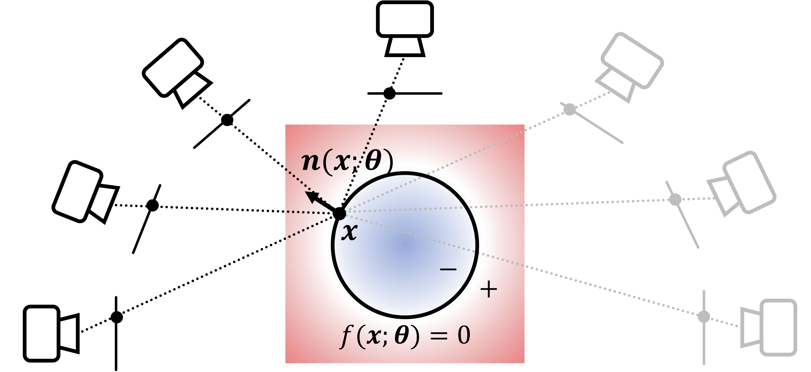

Approach Overview

Neural SDF Optimization
We project the surface point, found by sphere tracing, onto all views, and enforce the surface normal (i.e., SDF gradient) to be perpendicular to all tangents from visible views. We train the neural SDF with this TSC loss, silhouette, and Eikonal loss.Comparison on DiLiGenT-MV
Reconstrucion with SymPS
Color images (Reference)
Azimuth maps (Input)
Shape
Results on PANDORA
Color images (Reference)
Azimuth maps (Input)
Shape
Related Links
Our work benefited from several works.
BibTeX
@inproceedings{mvas2023cao,
title = {Multi-View Azimuth Stereo via Tangent Space Consistency},
author = {Cao, Xu and Santo, Hiroaki and Okura, Fumio and Matsushita, Yasuyuki},
year = {2023},
booktitle = CVPR,
}